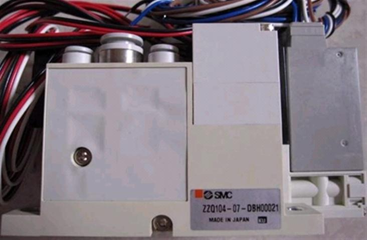
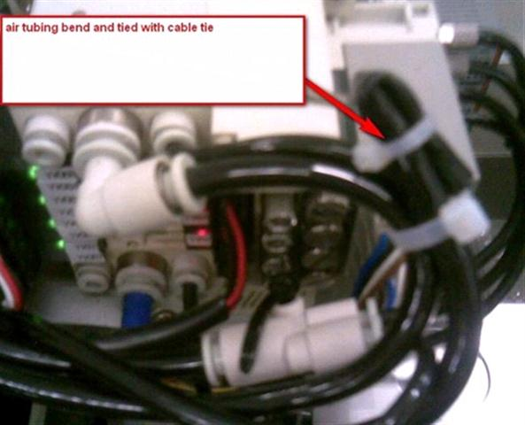

Service History
Subject: NS-7000 Input/Output Arm vacuum with counter air as a complete set for Hand A~D
Handler Model: NS-7000
Controller: RC520
Date: 26 Oct 2009
Symptom
Hand carry 2 set of vacuum unit(comes with counter air) as a complete block for Input Hand A~D,
with SMC code ZZQ104-07-DBH00021.
For the same part already on the NS-7000 of IDT(M) and Intel(M) the code was ZZQ107-04-X103.

1) So are the 2 different part code referring to same items, meaning they are compatiable(can swap as a whole unit)?
2) For Intel(M) one black tubing for both Input and Output Arm vacuum unit block is open end, meaning not block.
But IDT(M), black tubing is bend and tied with cable tie, refer photo below?

a) What is the purpose of this open end tubing that is not connected to the vacuum unit block?
b) Does it matter whether this open end tubing is block or unblock?
Action
1)Between ZZQ104 and ZZQ107 are number of vacuum unit. Therefore 104 is 4 units and 107 is 7 units.
Moreover 104-07 and 107-04, "-07"and "-04" should be diameter of nozzle..There for "-07" is 7mm and "-04" is 4mm.
Conclusion:
It is possible to replace for these parts.
For your reference:
ZZQ104-07-X103 and ZZQ104-07-DBH00021
Common use: Valve VQ110L-5LO-X21
Valve VQ110Y-5LO
Switch ZQ1S-D32CN-AS
The above 3 parts are both of using
.
2a)b) This tube is using counter air of cylinder rotator hand.
If there is no the option, the tube does not have any connection.
So, it is no problem both open and close.
However, if there is cylinder rotator hand or modified from cylinder rotator hand,
the tube connects to manifold.
So, it should be closed by cable tie.
Cause